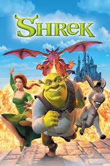
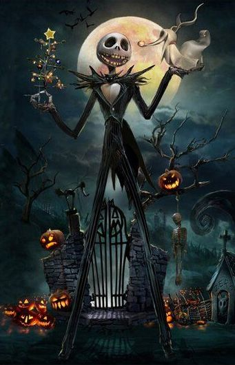
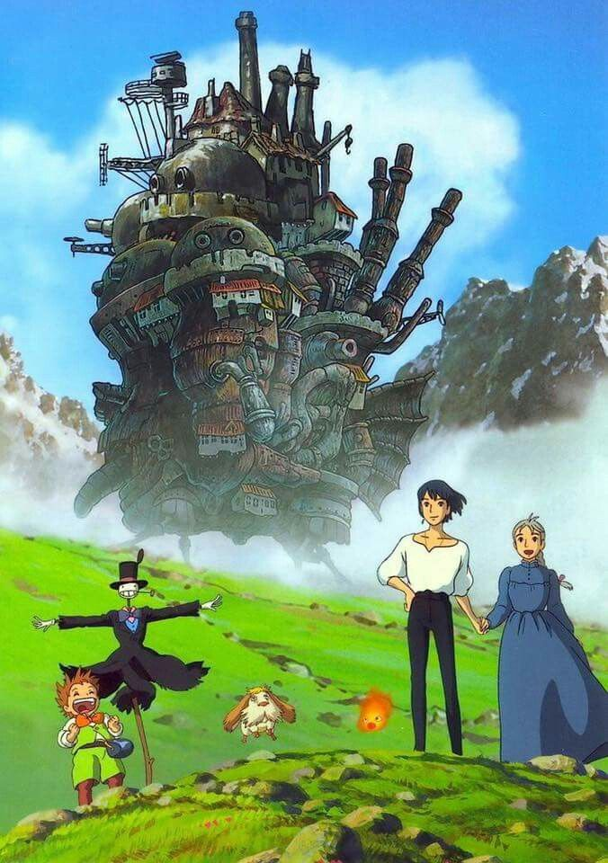

Mis Películas Favoritas
- Toy story
- Director:John Lasseter
- Año de lanzamiento: 1995
- Genero:Animación, aventura, comedia familiar, fantasía
- Duración: 81 minutos
- Idioma:Inglés (original)
- Shrek 
- Director:JAndrew Adamson y Vicky Jenson
- Año de lanzamiento: 2001
- Genero:animación, fantasía, comedia
- Duración:90 minutos
- Idioma:Inglés (original)

Sinopsis: Los juguetes de Andy, un niño de seis años, temen que un nuevo regalo les sustituya en el corazón de su dueño. Woody, un vaquero que ha sido hasta ahora el juguete favorito, trata de tranquilizarlos hasta que aparece Buzz Lightyear. Lo peor es que el arrogante Buzz se cree que es una auténtico astronauta en plena misión para regresar a su planeta.
Trailer:
Soundtrack:
Sinopsis: Shrek es un ogro que solo quiere vivir tranquilo en su pantano. Cuando el malvado Lord Farquaad envía criaturas mágicas a su hogar, Shrek acepta rescatar a la princesa Fiona para recuperarlo. En el viaje descubre la amistad, el amor… y que las apariencias engañan.
Trailer:
Soundtrack:
- El extraño mundo de Jack 
- Director:Henry Selick
- Año de lanzamiento: 1993
- Genero:Animación, fantasía, musical
- Duración:76 minutos
- Idioma:Inglés (original)
- El increíble castillo vagabundo 
- Director:Hayao Miyazaki
- Año de lanzamiento: 2004
- Genero:Animación, fantasía, aventura
- Duración:119 minutos
- Idioma:Japonés (original)
Sinopsis: Jack Skellington, el Rey de la Ciudad de Halloween, se cansa de celebrar siempre lo mismo. Un día descubre la Navidad y queda fascinado por su magia, por lo que decide secuestrar a Santa Claus y encargarse él mismo de la festividad… pero sus planes terminan provocando un caos inesperado.
Trailer:
Soundtrack:
Sinopsis: Sophie, una joven sombrerera, es víctima de un hechizo de una bruja que la convierte en una anciana. Para romper la maldición, busca la ayuda de Howl, un misterioso mago que vive en un castillo ambulante. Juntos se ven envueltos en una historia llena de magia, guerra, amor y autodescubrimiento.